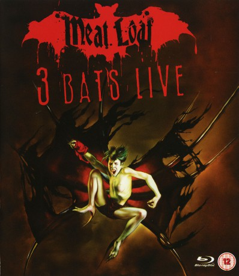

#4494 Meat Loaf: Three Bats Live
 
 IMDB-Wertung: 8.1 / 10
IMDB-Wertung: 8.1 / 10  Metascore: 0
Metascore: 0 
1. All Revved Up With No Place to Go
2. Paradise by the Dashboard Light
3. You Took the Words Right Out of My Mouth
4. Out of the Frying Pan (and into the Fire)
5. Life is a Lemon (and I Want My Money Back)
6. I’d Do Anything For Love (But I Won’t Do That)
7. Objects in the Rear View Mirror May Appear Closer Than They Are
8. Rock & Roll Dreams Come Through
9. The Monster is Loose
10. Bad For Good
11. If it Ain’t Broke Break It
12. Blind as a Bat
13. Two Out of Three Ain’t Bad
14. Bat Out of Hell
15. Black Betty
16. It’s All Coming Back to Me Now
17. Mercury Blues
18. Gimme Shelter
Jahr: 2007
Dauer: 144 Minuten
FSK:
Land: USA Studio: Universal Music DistributionTonspuren:
Untertitel:
Auflösung: 720p (1280x720) Größe: 8099 MB
Genre: Musik
Regisseur: Red Hamilton
Drehbuch: Wolf Haas
Soundtrack:
Darsteller:
 Meat Loaf als Himself
Meat Loaf als Himself- Kasim Sulton als Himself - Bass
- John Miceli als Himself - Drums
- Paul Crook als Himself - Guitar
- Randy Flowers als Himself - Guitar
- Mark Alexander als Himself - Piano and Keyboards
- David Luther als Himself - Saxophone and Keyboards
- Aspen Vincent als Herself - Lead Female Vocal
- Carolyn Coletti als Herself - Backing Vocals
- Marion Ravn als Herself - Guest Vocal
Datei: X:\Musik\Meat Loaf Three Bats Live (2007, FSK, 1280x720).mkv seit 27.09.2016
Festplatte: HD Serien(SU-Z)+Dokus+Musik
 Es gibt insgesamt 134 Filme in der Gruppe 'Musik'
Es gibt insgesamt 134 Filme in der Gruppe 'Musik'